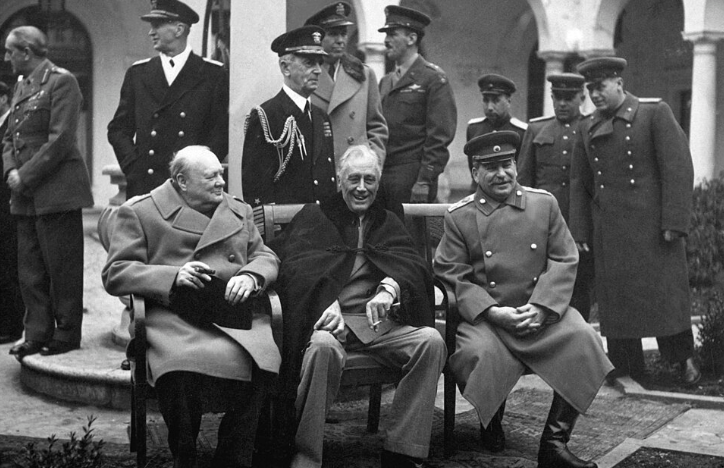
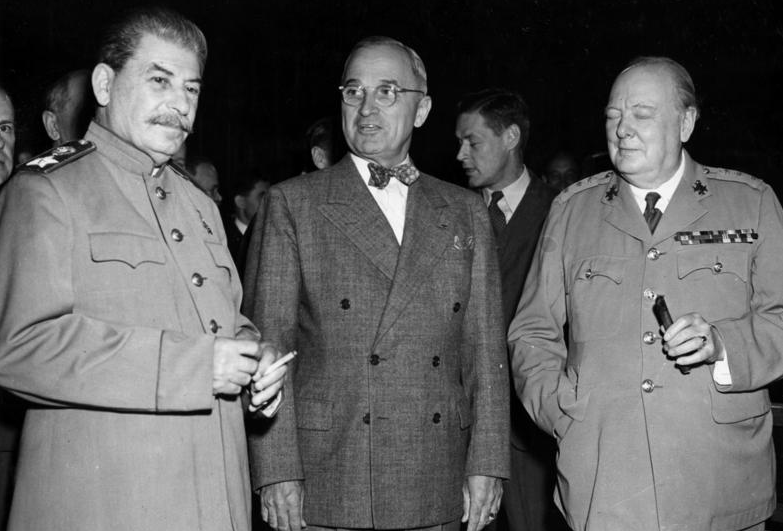
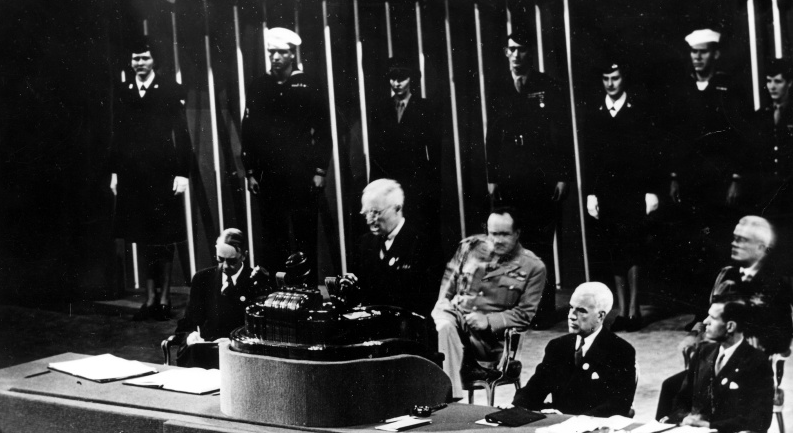
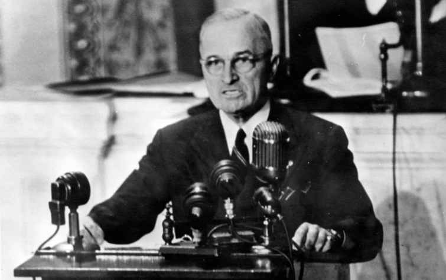
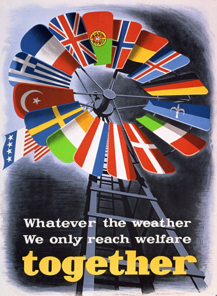
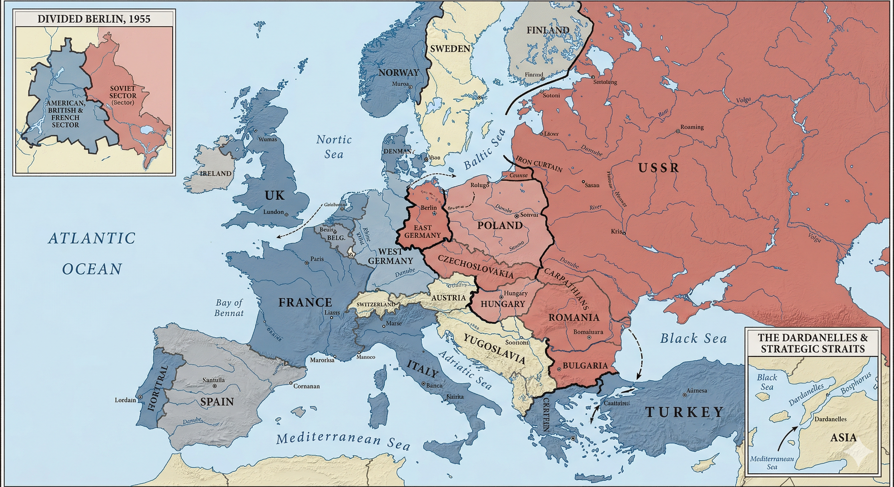

Core Objectives
- Analyze the causes, course, and consequences of the Korean War, including the UN's police action and the stalemate at the 38th Parallel.
- Trace the escalation of the nuclear arms race from the atomic bomb to the H-bomb and the strategic shift to "brinkmanship."
- Evaluate the psychological and political impact of the launch of Sputnik on American education and space technology.
Key Terms
38th Parallel | Korean War | General Douglas MacArthur | H-Bomb | Dwight D. Eisenhower | John Foster Dulles | Brinkmanship | Central Intelligence Agency (CIA) | Nikita Khrushchev | Sputnik | U-2 Incident | Francis Gary Powers | Mutually Assured Destruction (MAD)
Introduction | The Era of Global Escalation
By the dawn of the 1950s, the Cold War shifted from a diplomatic standoff in Europe to a series of high-stakes military and technological confrontations across the globe. The fall of China to communism and the sudden invasion of South Korea forced the United States to transform its policy of containment into a physical, often bloody, reality. As American troops fought localized "police actions" in Asia, scientists and world leaders engaged in a terrifying race to master the power of the atom and the vacuum of space. This period defined a new world order where peace was maintained through the threat of total annihilation and the constant shadow of espionage. Ultimately, the "The American Experiment" faced its most grueling test yet: surviving a nuclear age where the line between diplomacy and catastrophe was razor-thin.

The transition from the late 1940s to the 1950s marked a dangerous evolution in superpower rivalry, moving from political containment in Europe to active military engagements in Asia and a relentless technological race to develop world-ending weapons. This global escalation transformed diplomatic standoffs into the daily realities of localized combat and the overarching shadow of mutually assured destruction.
Analysis Question:
How did the simultaneous development of advanced nuclear technology and localized military conflicts alter the way global superpowers approached international diplomacy during this era?
The Outbreak of the Korean War
In the years immediately following World War II, the American strategy of containment was primarily focused on Europe. Programs like the Marshall Plan and alliances like NATO were designed to rebuild and fortify Western democracies against Soviet expansion. However, the nature of the Cold War fundamentally changed at the dawn of the 1950s. The fall of China to communist forces in 1949 had already sent shockwaves through the American political establishment, creating a deep anxiety that the United States was "losing" Asia. This anxiety turned into a brutal reality when the ideological standoff between the democratic West and the communist East erupted into a massive, bloody conflict on a small peninsula in East Asia. The Cold War had turned hot, and the United States found itself sending millions of young men into combat to physically halt the spread of communism.
The Division at the 38th Parallel
The roots of the conflict in Korea lay in the final days of World War II. For over three decades, the Japanese empire had brutally occupied and ruled the Korean peninsula, exploiting its resources and suppressing its people. In August 1945, as the Japanese empire collapsed, Allied forces moved in to accept the surrender of Japanese troops. A hasty political agreement was struck between the United States and the Soviet Union to divide the responsibility for accepting this surrender. Soviet forces, advancing from the north, accepted the Japanese surrender down to the 38th Parallel, a line of latitude that roughly cut the peninsula in half. American forces, moving up from the south, accepted the surrender south of that line.

A map illustrating the formal division of the Korean peninsula at the 38th Parallel following World War II.
Why it Matters: This artificial boundary physically manifested the geopolitical fracture between Soviet and American spheres of influence. It created the permanent political frontier that ultimately necessitated international military intervention when deliberately crossed.
Spotlight Question:
How does this map of an artificially created boundary explain the underlying political tensions that set the stage for war on the peninsula?
What was intended to be a temporary military boundary quickly hardened into a permanent political frontier. As the Cold War deepened, the two superpowers established rival governments in their respective occupation zones. In the north, the Soviet Union installed a hardline communist government led by the charismatic and ambitious dictator Kim Il Sung. In the south, the United States supported the creation of a pro-Western, capitalist government led by Syngman Rhee, a fierce anti-communist who was, nevertheless, highly authoritarian in his own right. By 1949, both the United States and the Soviet Union had withdrawn the vast majority of their combat troops from the peninsula, leaving behind two heavily armed, deeply hostile Korean nations. Both Kim Il Sung and Syngman Rhee claimed to be the sole legitimate ruler of the entire peninsula, and both publicly declared their intention to reunify Korea under their own leadership.
Checkpoint
1. Why did the division of Korea at the 38th Parallel harden into a permanent political frontier?
The North Korean Invasion
The volatile situation exploded into all-out war on the morning of June 25, 1950. Supplied with heavy Soviet artillery, advanced T-34 tanks, and tactical planning approved by Joseph Stalin, the North Korean army surged across the 38th Parallel in a massive surprise attack. The South Korean army, which possessed no tanks and little heavy artillery, was completely overwhelmed by the mechanized assault. Within days, the South Korean capital of Seoul had fallen to the communist forces, and the remnants of the South Korean military were in full retreat toward the southern tip of the peninsula.

Soviet-supplied military personnel and equipment heavily entrenched during the brutal winter months of the Korean conflict.
Why it Matters: This harsh environment demonstrated the massive logistical and human toll of fighting a localized proxy war in the nuclear age. The rapid brutalization of the conflict convinced Truman that military containment was necessary to prevent further Soviet aggression worldwide.
Spotlight Question:
How did the physical intensity and frozen reality of this conflict push the United States to escalate its containment policy from economic aid to direct military action?
In Washington, D.C., President Harry S. Truman viewed the North Korean invasion not just as a local civil war, but as a deliberate test of the free world's resolve by the Soviet Union. Remembering how the failure of Western democracies to confront Adolf Hitler in the 1930s had led directly to World War II, Truman believed that failing to defend South Korea would encourage further communist aggression around the globe. He ordered American naval and air forces to provide immediate support to the South Koreans.
Simultaneously, the United States appealed to the United Nations Security Council to intervene. In a stroke of immense historical luck for the United States, the Soviet delegation was currently boycotting the Security Council to protest the UN’s refusal to recognize the newly established communist government of China. Because the Soviet representative was absent and unable to use his veto power, the Security Council successfully passed a resolution condemning the North Korean invasion and calling upon member nations to provide military assistance to South Korea. Truman committed American ground troops to the conflict, framing the massive military intervention not as a declared war, but as a United Nations "police action." Despite this label, the United States provided the vast majority of the troops, equipment, and financial backing for the United Nations command.
Checkpoint
2. Why did President Harry S. Truman view the North Korean invasion as an event that required immediate American intervention?
The Course and Consequences of the Conflict
The Korean War was a conflict defined by dramatic reversals of fortune, brutal weather conditions, and massive casualties that pushed the American military to its absolute breaking point. From the desperate defensive stand at the Pusan perimeter to the brilliant, high-stakes gamble of the Inchon invasion, the war forced the United States to confront the terrifying limitations of fighting a localized war in a nuclear age. As the battlefield shifted from the frozen mountains near the Yalu River back to the trenches of the 38th Parallel, the conflict became a crucible for American leadership, testing the constitutional principle of civilian control over the military as the administration grappled with the difficult reality of "limited war". Ultimately, the stalemate underscored the high stakes of the Cold War, where thousands died for yards of territory while the world held its breath to avoid a global nuclear holocaust.
MacArthur's Counterattack and the Chinese Intervention
When American troops first arrived in Korea in the summer of 1950, they were severely unprepared for the ferocity of the North Korean advance. Throughout July and August, the combined American and South Korean forces were pushed all the way to the southeastern corner of the peninsula, desperately clinging to a small defensive perimeter around the port city of Pusan. The situation appeared hopeless. However, the supreme commander of the United Nations forces, General Douglas MacArthur, orchestrated a brilliant and highly risky counterattack.

United Nations forces participating in General Douglas MacArthur's amphibious assault at the western port of Inchon in September 1950.
Why it Matters: This bold military maneuver drastically changed the momentum of the war by trapping communist forces and pushing them rapidly north. The aggressive expansion of the attack toward the Yalu River directly resulted in massive Chinese intervention.
Spotlight Question:
How did the initial success of this amphibious assault ultimately trigger the entry of an over 300,000-man Chinese army into the conflict?
In September 1950, MacArthur launched a massive amphibious invasion behind enemy lines at the western port city of Inchon. Navigating extreme tidal fluctuations and heavily fortified sea walls, the American forces successfully landed, cutting off the North Korean supply lines and trapping the communist army between the newly arrived forces at Inchon and the troops breaking out of the Pusan perimeter. The North Korean army collapsed, fleeing in disarray back across the 38th Parallel.
Capitalizing on this stunning momentum, MacArthur convinced President Truman to alter the war’s objective. Instead of simply restoring the original border, the United Nations forces would push north into communist territory, crush the North Korean regime entirely, and reunify the peninsula into a single, democratic nation. By late October, American troops were racing northward, pushing toward the Yalu River, which served as the border between North Korea and communist China.
The Chinese government, led by Mao Zedong, viewed the rapidly approaching American army as a severe threat to their own national security. China issued several stern warnings that it would not stand idly by and let American troops occupy the territory directly across its border. MacArthur dismissed these warnings, assuring Truman that the Chinese would not dare intervene. He was disastrously wrong. In late November 1950, over 300,000 Chinese soldiers secretly crossed the Yalu River and ambushed the overextended American forces in the freezing, mountainous terrain of North Korea. Using bugles, whistles, and massive human-wave attacks in the dead of night, the Chinese forces shattered the United Nations lines. The American military was forced into one of the longest and most agonizing retreats in its history, fighting their way southward through sub-zero temperatures and blinding blizzards. By early 1951, the Chinese and North Korean forces had pushed the Americans back across the 38th Parallel and recaptured the South Korean capital of Seoul.
Checkpoint
4. What was the strategic goal of General Douglas MacArthur’s amphibious invasion at Inchon?
The Dismissal of a General and the Final Stalemate
Faced with this massive Chinese intervention, General MacArthur demanded a radical expansion of the war. He requested permission to blockade the Chinese coast, use nationalist Chinese troops from Taiwan to invade the Chinese mainland, and drop dozens of atomic bombs on Chinese cities and military bases. President Truman flatly refused. Truman recognized that launching a massive attack on China would likely draw the Soviet Union into the conflict, triggering World War III and a potential nuclear holocaust. Truman insisted on fighting a "limited war," focusing solely on the original goal of defending South Korea.

General Douglas MacArthur, whose bold strategy saved the UN forces before his insubordination led to his dismissal by President Truman.
Why it Matters: MacArthur's demand to expand the war into China illustrated the severe tension between ambitious military commanders and the political reality of nuclear-age limited war. The subsequent conflict forced the administration to assert the constitutional principle of civilian control over the armed forces.
Spotlight Question:
What constitutional principle did the President feel compelled to defend when he ultimately dismissed the powerful commander pictured here?
Furious that his hands were tied, MacArthur bypassed his commander-in-chief. He began writing letters to newspaper publishers and Republican politicians, publicly criticizing Truman’s strategy and declaring that "there is no substitute for victory." To the president, this was a clear case of insubordination. The United States Constitution explicitly places the civilian president in command of the military to prevent generals from seizing political power. To preserve the constitutional principle of civilian control over the armed forces, Truman made the highly unpopular decision to fire General Douglas MacArthur in April 1951. While many Americans were outraged at the dismissal of a beloved World War II hero, military leaders supported Truman, agreeing that expanding the war into China would be a catastrophic mistake.
By the summer of 1951, the frontline stabilized near the original 38th Parallel. For the next two years, the Korean War degenerated into a bitter, grinding stalemate characterized by trench warfare, artillery barrages, and fierce battles over small, barren hills. While diplomatic negotiations dragged on endlessly, thousands of soldiers continued to die for yards of territory. Finally, the election of Dwight D. Eisenhower as President in 1952 brought a renewed push for peace. Eisenhower, a former five-star general, traveled to Korea and quietly let it be known that the United States might use nuclear weapons if a truce was not reached. In July 1953, an armistice was signed.
The agreement essentially restored the pre-war boundaries, creating a heavily fortified Demilitarized Zone (DMZ) near the 38th Parallel that still divides North and South Korea today. The war was incredibly costly; over 36,000 Americans died, alongside an estimated two million Korean civilians and soldiers, as well as hundreds of thousands of Chinese troops. While the war failed to reunify Korea, it achieved the original objective of the Truman administration: the containment policy had been successfully defended with American blood, and South Korea was saved from communist conquest.
Checkpoint
6. Why did President Truman make the highly controversial decision to fire General Douglas MacArthur?
The Nuclear Arms Race and Brinkmanship
The Korean War fundamentally militarized the Cold War, but an even more terrifying escalation was occurring in the laboratories and testing grounds of the superpower nations as they engaged in a relentless pursuit of weapons capable of ending human civilization. The loss of the American nuclear monopoly triggered a frantic crash program to develop the H-Bomb, replicating the power of the sun and creating a world where peace was maintained only by the guarantee of absolute mutual destruction. Under the Eisenhower administration, diplomacy took on a harder edge known as "Brinkmanship," a high-stakes strategy of pushing to the absolute edge of all-out war to force an enemy to back down. This era of high tension also saw the rise of a secret war, with the Central Intelligence Agency (CIA) utilizing covert operations, sabotage, and subversion to manage spheres of influence in a world where direct military confrontation had become too dangerous to risk.
The Hydrogen Bomb and the Policy of Deterrence
In August 1949, the Soviet Union shocked the world by successfully testing its own atomic bomb, ending the brief American monopoly on nuclear weapons years earlier than Western scientists had predicted. The realization that Joseph Stalin now possessed the power to annihilate American cities triggered widespread panic. In response, President Truman authorized a crash program to develop a weapon exponentially more powerful than the atomic bombs dropped on Japan. This new weapon was the thermonuclear bomb, or H-Bomb. While the original atomic bombs relied on the splitting of atoms (fission), the H-bomb forced atoms together (fusion), replicating the terrifying power of the sun.

The massive thermonuclear detonation of "Ivy Mike," the first full-scale hydrogen bomb test in 1952.
Why it Matters: The successful detonation of this thermonuclear device inaugurated an era of unprecedented destructive capability. It established the terrifying strategic paradigm of Mutually Assured Destruction, where peace was guaranteed solely by the threat of global annihilation.
Spotlight Question:
Why did the successful development of this specific weapon force both superpowers into the dangerous defensive position known as Mutually Assured Destruction (MAD)?
The United States successfully detonated the first H-Bomb, code-named "Ivy Mike," in 1952, vaporizing an entire island in the Pacific Ocean. Its explosive yield was roughly 1,000 times greater than the bomb that destroyed Hiroshima. However, the American advantage was fleeting; the Soviet Union successfully tested its own thermonuclear device less than a year later.
By the time President Dwight D. Eisenhower took office, both superpowers possessed the capacity to inflict unimaginable destruction. Eisenhower's Secretary of State, John Foster Dulles, was a staunch anti-communist who believed that the previous policy of containment was too passive. Dulles argued that the United States could not afford to fight endless, costly conventional wars like the one in Korea. Instead, he formulated a policy known as "massive retaliation." Dulles promised that if the Soviet Union or its allies attacked American interests anywhere in the world, the United States would retaliate instantly with its full nuclear arsenal.
This willingness to go to the absolute edge of all-out nuclear war in order to force the enemy to back down became known as Brinkmanship. To support this strategy, the United States rapidly expanded its air force, building thousands of strategic bombers designed to deliver nuclear payloads across the globe. This dynamic created a terrifying paradox: peace was maintained only by the guarantee of absolute mutual destruction. The prevailing strategic reality became known as Mutually Assured Destruction (MAD). Under MAD, neither side dared to launch a direct attack on the other, knowing that a nuclear strike would guarantee an immediate, devastating counter-strike that would obliterate both nations. The survival of humanity rested entirely on the assumption that the leaders of both nations were rational actors who wished to avoid suicide.
Checkpoint
8. How did the United States respond to the Soviet Union's successful test of its own atomic bomb in 1949?
Covert Operations and Global Interventions
Because the threat of nuclear annihilation made direct warfare between the United States and the Soviet Union too dangerous, the superpowers sought other ways to gain influence and subvert their enemies. The Eisenhower administration increasingly relied on the newly established Central Intelligence Agency (CIA) to conduct covert, or secret, operations around the world. The CIA used spies, bribery, sabotage, and propaganda to gather information and overthrow foreign governments that were perceived as friendly to the Soviet Union.

A chaotic street scene from Tehran during the 1953 coup d'état orchestrated by the Central Intelligence Agency to overthrow the Iranian Prime Minister.
Why it Matters: This successful intelligence operation demonstrated the Eisenhower administration's pivot toward covert interventions to manage spheres of influence. While securing Western oil interests, the intervention permanently altered American relations with the Middle East and fostered deep local resentment.
Spotlight Question:
What does this chaotic street scene reveal about the covert tactics the United States used to manage global spheres of influence without triggering open war?
In 1953, the CIA executed its first major covert operation in Iran. When Iran’s prime minister nationalized the country's massive oil fields—taking them out of the hands of Western corporations—the United States feared the prime minister might turn to the Soviet Union for economic support. The CIA orchestrated a secret coup, distributing millions of dollars to anti-government forces to spark riots in the streets of Tehran. The operation successfully overthrew the prime minister and returned the pro-American Shah of Iran to absolute power, securing Western access to Iranian oil but sowing seeds of deep anti-American resentment in the Middle East. The following year, the CIA orchestrated a similar coup in Guatemala, training an army to overthrow a democratically elected president who had given uncultivated American corporate land to landless peasants.
While the United States utilized the CIA to manage its sphere of influence, the Soviet Union maintained a brutal grip on its own satellite states. Following the death of Joseph Stalin in 1953, a new leader, Nikita Khrushchev, eventually took power in the Soviet Union. Khrushchev publicly criticized some of Stalin's worst atrocities and spoke occasionally of "peaceful coexistence" with the West. However, when the citizens of Hungary attempted to break free from Soviet control in a massive democratic uprising in 1956, Khrushchev brutally demonstrated the limits of his tolerance. He ordered heavily armed Soviet tanks to roll into the streets of Budapest, crushing the rebellion and killing tens of thousands of Hungarian citizens. The United States, restrained by the fear of triggering World War III, did nothing to assist the Hungarian freedom fighters, solidifying the iron grip of the Soviet Union over Eastern Europe.
Checkpoint
10. Why did the Eisenhower administration increasingly rely on the Central Intelligence Agency (CIA) to achieve its foreign policy goals?
The Space Race and the Skies Above
By the mid-1950s, the intense competition between the United States and the Soviet Union extended beyond geography and ideology into the realms of science, education, and the cosmos itself. The mastery of technology became the ultimate symbol of a system's superiority, a reality that came crashing home for Americans when the Soviet Union launched Sputnik, the world’s first artificial satellite. This technological shock shattered American assumptions of scientific dominance and triggered a massive national effort to revolutionize science education and aerospace research to counter the threat of long-range nuclear missiles. While the late 1950s saw cautious attempts at diplomacy, the fragile hopes for a breakthrough were utterly destroyed by the U-2 Incident, proving that in the skies above, the line between gathering intelligence and triggering a global catastrophe remained razor-thin.
The Shock of Sputnik
By the mid-1950s, both superpowers were racing to develop Intercontinental Ballistic Missiles (ICBMs). These massive rockets were designed to do what bombers could not: deliver a nuclear warhead across the globe, from Soviet territory to American cities, in a matter of minutes, rendering traditional defenses useless.

The Sputnik 1 artificial satellite, the first human-made object to orbit the Earth.
Why it Matters: The successful launch of this small device shattered the illusion of unparalleled American technological supremacy. The existence of the Soviet ICBM capable of launching it caused a widespread national panic, forcing immediate and massive reforms in American science education and research funding.
Spotlight Question:
Why did the successful deployment of this small transmitter trigger immediate and massive reforms in the American public education system?
On October 4, 1957, the Soviet Union stunned the world by using an ICBM rocket to launch Sputnik, the world’s first artificial satellite. Sputnik was simply a small, polished aluminum sphere about the size of a beach ball, equipped with four antennas that transmitted a continuous radio "beep" back to Earth. As the tiny satellite orbited the planet every 96 minutes, passing over the United States multiple times a day, the psychological impact on the American public was profound.
Americans had always assumed that their nation possessed superior scientific and technological capabilities. The launch of Sputnik shattered that confidence. Furthermore, the terrifying reality of Sputnik was not the satellite itself, but the rocket that carried it. If the Soviet Union possessed a rocket powerful enough to push a satellite into outer space, they clearly possessed a rocket powerful enough to drop a hydrogen bomb on New York or Washington, D.C. The launch triggered a wave of intense national self-criticism in the United States. Politicians and citizens demanded to know how America had fallen behind. In response, the U.S. government dramatically increased funding for scientific research, created the National Aeronautics and Space Administration (NASA) to coordinate the space effort, and passed the National Defense Education Act, which poured millions of dollars into public schools to aggressively improve the teaching of math, science, and foreign languages.
Checkpoint
12. Why did the launch of the Sputnik satellite profoundly shock the American public and political establishment?
The U-2 Crisis and Broken Diplomacy
Despite the intense arms race and the paranoia generated by Sputnik, the late 1950s saw cautious attempts at diplomacy. President Eisenhower and Premier Khrushchev agreed to meet at a major summit in Paris in the spring of 1960 to discuss nuclear disarmament and the ongoing tensions regarding the divided city of Berlin. However, the fragile hopes for a diplomatic breakthrough were utterly destroyed by a highly secret intelligence failure.

Soviet citizens viewing the displayed wreckage of the American U-2 spy plane piloted by Francis Gary Powers in 1960.
Why it Matters: The public capture and display of this aircraft humiliated the Eisenhower administration and exposed secretive espionage operations. The ensuing diplomatic scandal abruptly ended crucial disarmament talks, plunging the superpowers back into severe hostility.
Spotlight Question:
How did the dramatic public display of this downed aircraft permanently shatter the fragile attempts at diplomacy during the planned 1960 Paris summit?
Since 1955, the CIA had been flying top-secret spy missions deep over Soviet territory. The aircraft used for these missions was the U-2, a high-altitude plane designed to fly at 70,000 feet, far beyond the reach of Soviet fighter jets and, the CIA believed, beyond the range of Soviet anti-aircraft missiles. The U-2 was equipped with advanced infrared cameras that allowed American intelligence to photograph Soviet troop movements, missile sites, and military bases with astonishing detail. Eisenhower was increasingly nervous about these flights, knowing that if a plane were discovered, it would be viewed as a massive violation of international law and an act of war.
On May 1, 1960, just days before the scheduled Paris summit, a Soviet guided missile successfully struck an American U-2 plane flying over the heart of Russia. The pilot, Francis Gary Powers, parachuted to safety but was immediately captured by Soviet authorities. Unaware that Powers had survived and that the Soviets possessed the wreckage of the spy plane, the Eisenhower administration issued a fabricated cover story, claiming that a civilian weather plane had simply drifted off course.
Khrushchev sprang the trap. He dramatically revealed the captured pilot, the spy cameras, and the wreckage of the U-2, publicly humiliating the American government and exposing Eisenhower’s lie. Eisenhower was forced to take personal responsibility for the secret flights. He admitted they were espionage missions but refused to apologize, arguing that the closed nature of the Soviet state made such intelligence gathering necessary for American security. Khrushchev was furious. He stormed out of the Paris summit before it even began and withdrew his invitation for Eisenhower to visit the Soviet Union. The U-2 Incident shattered whatever limited trust had been built between the two leaders, plunging the United States and the Soviet Union back into the deepest, most dangerous depths of the Cold War.
Checkpoint
14. What was the primary purpose of the American U-2 flights over Soviet territory?
🧭 Turning Points | The Korean War
The First "Hot" War
The Event
On June 25, 1950, the Cold War dynamic permanently shifted when North Korean forces, heavily armed and supported by the Soviet Union, invaded South Korea. Until this moment, the United States had combated the spread of communism primarily through economic aid, such as the Marshall Plan, and diplomatic alliances, such as the formation of NATO. The invasion of South Korea forced the United States to act on the principles of the Truman Doctrine with direct military force. Securing a mandate from the United Nations, President Truman deployed millions of American troops into combat in Asia, officially transforming the ideological struggle of the Cold War into a massive, physical war.

The reliance on a multinational mandate rather than a formal Congressional declaration of war fundamentally altered the execution of American foreign policy. By utilizing executive authority as commander-in-chief to commit massive troop numbers to an overseas conflict, a lasting precedent was established that vastly expanded presidential military power and paved the way for future undeclared interventions.
How Things Changed
The Korean War represented a profound turning point in American foreign policy and the mechanics of presidential power. Previously, the United States had drawn down its military forces dramatically following the end of major conflicts. The Korean War convinced American policymakers that a massive, permanent, peacetime military establishment was absolutely necessary to contain Soviet aggression worldwide. Furthermore, the conflict altered how the United States goes to war. Truman committed forces to Korea without ever seeking a formal declaration of war from Congress, relying instead on his authority as commander-in-chief and the United Nations resolution. This set a major historical precedent, expanding executive power and paving the way for future undeclared military interventions, most notably in Vietnam.
Historical Significance
The conflict not only devastated the Korean peninsula—leaving it permanently divided at the 38th Parallel with millions dead—but it also solidified the global nature of the Cold War. It demonstrated that the United States was willing to spill American blood to defend distant nations that possessed little intrinsic economic or strategic value, simply to uphold the principle of containment. It also ushered in the terrifying era of "limited war" in the nuclear age, as the superpowers learned they had to fight proxy wars without triggering a civilization-ending nuclear exchange.
Leadership Evaluation Questions
Evaluate Strategy
Why did President Truman’s commitment to the concept of "limited war" in Korea necessitate the removal of General Douglas MacArthur, and what did this reveal about the principle of civilian control over the military?
Compare Viewpoints
Contrast the Soviet Union’s strategy of providing clandestine material support to the North with the United States' decision to lead a transparent, multinational UN coalition. How did these different approaches reflect each superpower's goals in 1950?
Assess the Legacy
How did the precedent of bypassing a formal Congressional declaration of war fundamentally reshape the constitutional balance of power regarding American foreign interventions in the decades that followed?
Vocabulary Activity
Test your knowledge of the Cold War's escalation by filling in the blanks with the correct terms.
The Cold War intensified when North Korean forces crossed the 1. in 1950, sparking the 2. . Although 3. initially turned the tide with a brilliant landing at Inchon, his later insubordination regarding the expansion of the war into China led to his dismissal. As the conflict reached a stalemate, the world watched a terrifying technological race unfold. The development of the 4. meant that a single weapon could now destroy entire cities, leading to the strategic reality of 5. , where neither side dared strike first for fear of total annihilation.
Following the election of 6. , U.S. foreign policy became more aggressive. His Secretary of State, 7. , championed a policy of 8. , or the willingness to go to the edge of nuclear war to maintain peace. Simultaneously, the U.S. began using the 9. to conduct covert operations to overthrow unfriendly regimes.
The tension moved into the cosmos in 1957 when the Soviet Union, led by 10. , launched 11. , sparking the Space Race and a crisis in American education. Diplomacy between the two nations finally collapsed in 1960 during the 12. . A high-altitude spy plane piloted by 13. was shot down over Soviet territory, exposing American espionage and ending hopes for a peaceful summit.